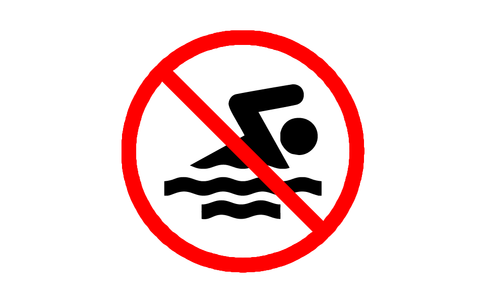
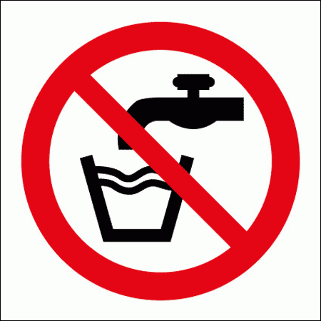

Since Schistosomiasis is a water-borne disease the best ways to prevent infection are:
Vigorious towel drying ay help after brief skin exposure of contaminated water.


Environmental Prevention
Schistosomiasis is spread through water containing schistomes from feces. We can prevent this by implementing plumbing systems where Schistosomiasis continuously happens. With the plumbing systems people in underdeveloped countries won't throw their waste into rivers and lakes and hinder the spread of Schistosomiasis.
Solution
Our solution to reduce the number of people getting infected with Schistosomiasis. Our solution is a Water Filtration Medical Kit. Inside there is Praziquantel(the treatment for the disease), a portable water filter, and a 24oz bottle of water to help the user start off. With this device the user can have clean water to drink from and to bathe in and reduces the chances of the user of getting Schistosomiasis.